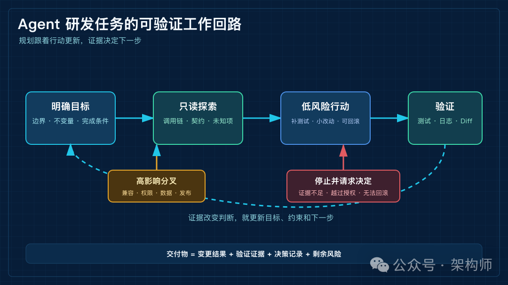
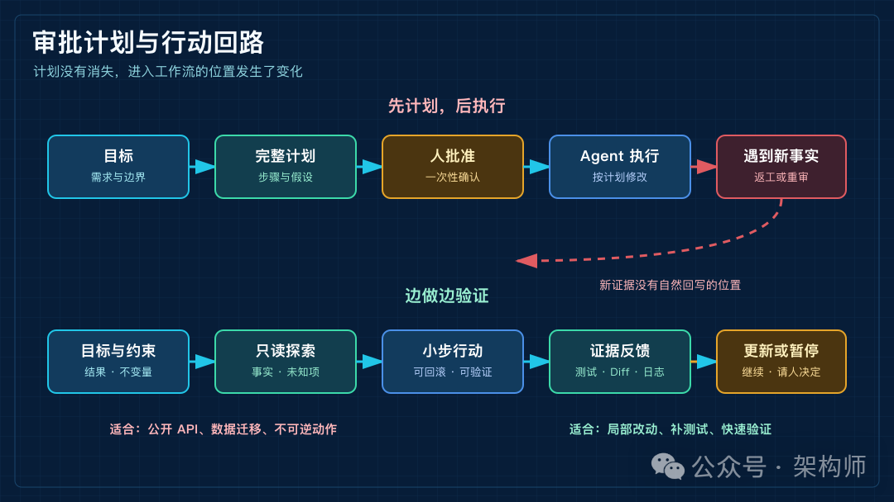
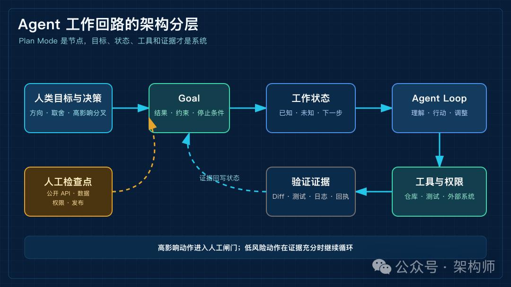

Plan Mode之死？Agent需要一条可验证的工作回路
来源：微信公众号 归档日期：2026-09-28 抓取状态：成功 原文字符：10591｜配图：4 张
摘要速览
- 解读 Ayman Nadeem《Plan mode is dead》：当 Agent 能自读代码、试方案、跑测试并按结果调整时，执行前写得越完整的长计划越容易变成遇新事实即失效的旧假设——规划仍需要，但不该再以一份长文档为中心；Claude Code 的 plan 权限模式并未消失，问题转为 Agent 需要一条可验证的工作回路。
核心内容
（待补充）
可执行启发
（待补充）
我的想法
（待补充）
原文沉淀
目录
- 先看一遍真实的开发过程
- 先把 planning 和 plan 分开
- 计划模式过去为什么有效
- 计划书为什么开始变重
- 一项研发任务怎样穿过这个回路
- 先定义结果，不急着定义文件
- 先读调用链，再决定方案
- 用小动作拿到证据
- 把高影响决定留给人
- 从审批计划变成行动回路
- 意图
- 约束
- 行动
- 证据
- 分叉
- 什么时候仍然应该先做计划
- 并行 Agent 之后，人应该看什么
- Plan Mode 下一步应该长什么样
- 参考资料
- 相关阅读
架构师（JiaGouX）
我们都是架构师！ 架构未来，你来不来？
9 月 24 日，Ayman Nadeem 发布了《Plan mode is dead》，复盘自己在 Nuanced 上做的一次产品尝试。 这个标题很容易被读成一句产品判断。Plan Mode 不再有用了？细读原文，Ayman 讨论的其实是一条更具体的研发流程。先生成完整计划，由人批准，再交给 Agent 执行。
这套流程曾经很有用。只是当 Agent 已经能自己读代码、试方案、跑测试，并根据结果调整时，计划在执行开始前写得越完整，越可能在遇到新事实后变成需要维护的旧假设。规划仍然需要，问题是它是否还应该以一份长文档为中心。
从官方产品文档看，Plan Mode 也没有从 Agent 工具里消失。Claude Code 当前仍然提供 plan 权限模式。Agent 可以读取文件、运行只读命令和整理计划，但不能直接修改源文件。同一套权限体系里，Anthropic 还提供了 auto 模式，让模型先替一部分工具调用做权限判断。Google 的 Gemini Code Assist Agent Mode 也保留了显式计划，复杂任务可以先展示高层方案，用户再评论、编辑和批准计划以及工具调用。
两个产品的设计放在一起看，问题就具体多了。当 Agent 能自己探索和行动时，人需要在什么地方看到关键决定，哪些动作发生前仍然需要介入？
过去我们担心 Agent 不会先想；现在更常见的困扰是，它写了一份很完整的计划，却在执行中不断遇到新事实。计划写得越长，人越难看清哪些是已经确认的决定，哪些只是模型根据当前上下文做出的猜测。
我更关心的是，规划在 Agent 工作流里到底承担什么责任。计划需要保留的重点，是目标、不变量、未知项、验证证据和需要由人决定的分叉。规划也因此更像一条可验证的工作回路，而不只是一份开工前的文档。
先看一遍真实的开发过程
拿一个很常见的研发任务来看，把同步导出接口改成后台任务。
旧的做法通常是先让 Agent 写一份完整方案，人在文档上批注，批准以后再让它改代码。更适合 Agent 的过程，往往是先把目标和边界写清楚，再让它用低风险动作换取证据；证据改变了判断，就更新当前状态，遇到高影响分叉再请人决定。

Agent 研发任务的可验证工作回路
图 1｜一项 Agent 研发任务的可验证工作回路。
这条链路里，规划没有消失，只是被拆到了不同位置。目标和约束留在任务状态里，探索动作产生新事实，权限控制高影响操作，测试和日志负责证明结果，人只在需要承担产品或架构后果的分叉上介入。
| 阶段 | Agent 主要做什么 | 应留下什么 | 人在什么时候看一眼 |
|---|---|---|---|
| 定义结果 | 把需求改写成目标、约束和完成条件 | Goal、验收条件、范围 | 目标涉及公开承诺或跨团队协议时 |
| 探索系统 | 读代码、查调用链、运行只读检查 | 已确认事实、未知项、影响范围 | 原假设被代码事实推翻时 |
| 小步行动 | 补测试、做局部修改、运行可回滚实验 | Diff、命令输出、测试结果 | 动作将触碰数据、权限或公开 API 时 |
| 更新状态 | 根据证据调整下一步和停止条件 | 决策记录、剩余风险 | 证据冲突或连续几轮没有进展时 |
| 交付接手 | 整理变更、验证结果和未决问题 | 可复查的工作现场 | 合并、发布或责任移交前 |
先把 planning 和 plan 分开
Ayman 文章里有一个值得保留的区分。planning 和 plan 不是一回事。
前者是持续理解、做判断、试方案、吸收新事实的过程；后者通常是一份写出来的计划，负责保存一部分结论，并交给后续执行。
Nuanced 当初想解决的问题并没有过时。当机器修改软件的速度超过人类检查变化的速度，人怎样继续保持对系统的理解？
问题出在实现方式上。
如果把完整流程固定成下面这样，
对话 → 消除歧义 → 生成规格书 → 审查 → 批准 → 实现 → 代码审查
它就隐含了一个前提。理解可以在动手之前完成，执行只是把已经决定好的事情落地。
软件开发很少这么整齐。
你读到一个调用链，才发现原来的假设不成立；你补了一条测试，才发现接口的错误语义不能改；你跑了一次真实数据，才知道所谓的“简单迁移”会影响下游客户端。
执行不是规划的下游工厂。执行本身会产生新的信息，而新信息会改变规划。
所以，过时的部分是把思考强行切成一个只能发生在开工前的阶段。
计划模式过去为什么有效
Plan Mode 过去很有用，原因其实很朴素。
它同时承担了两份工作。
一份工作面向 Agent。把目标、文件路径、模块边界和执行顺序写得足够清楚，减少它从局部代码自行补全错误假设的机会。早期模型不太会探索大型代码库，也更容易看到需求就开始改文件，这份精确指令很有价值。
另一份工作面向人。在代码大量生成之前，帮助开发者确认“这是不是我要的东西”，并建立一份对系统的初步理解。
现在，第一份工作的必要性正在下降。模型越来越能自己读取代码、提出假设、运行工具和修正方案；第二份工作的必要性却在上升，因为代码生成更快了，人更难跟上决策、假设和影响范围。
问题在于，这两份工作被长期塞进了同一份计划文档。模型不一定需要一篇长指令，人也不一定能通过阅读长指令建立可靠的系统心智模型。
因此，早期的工作方式很自然，可以概括成下面这条链路。
先规划 → 人批准 → Agent 执行

审批计划与行动回路的对比
图 2｜两种工作形态的差别。计划仍然存在，只是从一次性审批文本变成随证据更新的工作状态。
这条链路把决策尽量前置，减少了模型在错误方向上连续行动的机会。
这份价值今天仍然存在。OpenAI 介绍内部使用 Codex 的实践时，建议大型改动先在 Ask Mode 中形成实施计划，再把它带入 Code Mode。Anthropic 当前的权限文档仍然提供 plan 模式，允许 Agent 读取文件、运行只读命令，但不修改源文件。Google 的 Gemini Code Assist Agent Mode 也把计划和工具使用保留为可以评论、编辑和批准的协作节点。
Hacker News 的讨论也没有形成单一答案。有人把 Plan Mode 当成只读探索和审阅节点，有人认为它只是提示词外壳，直接在聊天里说“先规划”就够了。这个分歧本身说明，大家使用的并不是同一个 Plan Mode。
所以，Plan Mode“已经死了”不是行业事实，而是一个产品作者基于自身工作流做出的复盘判断。
计划书为什么开始变重
模型能力提高以后，计划书开始承担一个有点尴尬的工作。
它原本要帮助 Agent 想清楚怎么做，现在模型越来越能自己读代码、提出假设、执行小实验和修正方案；它原本也要帮助人理解系统，可 AI 生成的长文又常常让人更难集中注意力。
信息量增加，不等于清晰度增加。
计划变重，往往和细节太多有关。文件路径、实现步骤、边界条件、伪代码、背景解释全都放进去，读者却很难分辨哪些是已经确认的事实，哪些只是模型根据当前上下文做出的猜测。
计划越长，隐藏在其中的假设越多。
Nuanced 甚至尝试过做 Spec Tour，带着用户浏览规格文档里的重点。这个尝试很能说明问题。如果一份完整规格书还需要再配一层导览，才能让人读懂，那么产品增加的可能只是另一组需要注意的文字，而不是更清楚的决策链。
更麻烦的是，计划审批以后，执行阶段的新证据没有天然的位置回写。于是 Agent 只能在两条路里选一条。
- 忠实执行一份已经被新事实推翻的计划；
- 暂停下来，把问题退回上游，重新走一遍审批流程。
前者会把错误假设固化进代码，后者会让整个工作流变得很僵。
问题可以换成一个更实际的问法。计划中哪些内容需要被持久化，哪些内容只是当前一轮推理的临时产物？
一项研发任务怎样穿过这个回路
还是看“把同步导出改成后台任务”这个例子。
先定义结果，不急着定义文件
第一步不需要马上列出要改哪些文件。先把结果写清楚。大文件导出不再占用同步请求，同时保留旧客户端的错误码语义，重试不能创建重复任务，现有任务状态接口也不能被悄悄改坏。
这一步也对应 OpenAI 当前 Goal 用例里的一个方向。让 Codex 跨多个轮次围绕一个持久目标工作，并用可验证的停止条件判断是否完成。任务要写清结果、约束、验证方式和阻塞条件，比“请实现一个异步导出模块”更适合交给 Agent，因为后者只说了动作，没有说完成意味着什么。
先读调用链，再决定方案
Agent 可以先读取网关、导出服务、任务表和客户端契约测试，运行只读检查，画出一条最小调用链。请求从哪里进来，文件在哪里生成，任务状态在哪里保存，错误码由谁解释。
这个阶段最重要的产物不是一份漂亮的架构图，而是三类事实。已经确认的约束、仍然未知的部分，以及下一步最值得验证的假设。
研究仓库以后，可能会发现下面几件事。
- 网关现在直接把文件流返回给客户端，旧客户端依赖这个行为；
- 重试机制没有幂等键，重复提交可能生成两份文件；
- 任务状态接口已经存在，只是被另一个模块使用；
- 失败时的错误码被前端当成可重试信号。
这时，最初那份“增加任务表、接入队列、增加状态接口”的方案已经不完整了。问题不在 Agent 没有执行计划，而在仓库事实改变了计划的前提。
用小动作拿到证据
下一步可以先补一条旧客户端契约测试，再为提交任务增加一个幂等键实验，或者只在本地跑一遍网关到任务表的调用链。
这些动作不会马上改变公开 API，却能回答关键问题。旧行为到底被谁依赖，现有字段能不能表达幂等状态，任务状态接口是否真的可以复用。
如果证据支持原方案，Agent 继续推进；如果证据推翻了假设，就更新工作状态。此时比重新生成一份几千字的计划更有价值的，是把变化记录成几件可检查的事。
goal: 将大文件导出从同步请求改为后台任务
invariants:
- 旧客户端的错误码语义不能静默改变
- 重试不得创建重复任务
- 现有任务状态接口保持兼容
unknowns:
- 网关超时配置是否允许保留旧接口一段时间
- 任务表中现有字段能否表达幂等状态
next_action:
- 检查导出调用链、任务表和客户端契约测试
evidence_needed:
- 重试场景测试通过
- 旧客户端契约测试通过
- 大文件导出不再占用同步请求
human_checkpoint:
- 确认新旧接口并行保留多久这份记录看起来不像一篇完整规格书，却更接近 Agent 和人需要共享的工作状态。它能告诉 Agent 当前目标是什么，哪些东西不能破坏，还缺哪些事实；也能让人知道，下一次介入时需要判断哪个问题。
把高影响决定留给人
如果网关无法稳定支持旧接口并行，Agent 可以继续整理兼容层和测试，但“旧接口保留多久”已经变成产品和架构决策，需要停在人工检查点。
如果最终决定保留两套接口，后续实现就要围绕兼容期、流量切换和回滚路径展开；如果决定直接升级客户端，任务边界和验收条件也要一起更新。这里的记录可以放在 Markdown、Issue、任务数据库，或者 Agent 自己的结构化状态里。关键是每次变化都能指向一条新证据，并留下下一步和剩余风险。
从审批计划变成行动回路
Ayman 最后给出的替代路径可以概括成下面这句话。
理解 → 行动 → 检查 → 澄清 → 调整 → 再次行动
我觉得这条循环最有价值的地方，是把“执行反馈”重新放回规划过程。
把这条循环落到 Agent 工程，我更倾向于先记录五类状态。
意图
这次要改变什么用户行为或系统性质。
约束
哪些 API、数据、权限和性能条件不能被破坏。
行动
下一步要读什么、改什么、运行什么实验。
证据
测试、日志、截图、diff 或外部系统回执说明了什么。
分叉
哪些结果可以让 Agent 继续，哪些结果需要由人决定。
这样看，Agent 不需要先把未来写完再执行计划，而是要在每次行动之后，用证据更新对问题的理解。
落到运行时，这个回路至少要有三个出口。局部、可回滚、验证结果明确的动作可以继续；涉及公开 API、数据、权限或业务承诺的分叉要交给人决定；测试无法运行、依赖不可读、范围越过授权边界，或者连续几轮都没有新证据时，更适合停止，而不是用更多文字掩盖不确定性。
这条回路放到系统里看，也能和过去几个月反复聊到的几条线对上。
Goal 解决的是长任务围绕什么目标继续、什么时候算完成；Harness 解决的是 Agent 在什么环境里行动、能用哪些工具、如何获得反馈；工作现场解决的是下一轮人或 Agent 接手时，哪些状态必须还在；Spec 和规则解决的是意图、边界和验收条件如何显式化。
这几层各自承担不同责任，不能互相替代。
一次 Agent 工作可以拆成几个责任明确的层。目标负责方向，规则负责边界，工具负责行动，验证负责证据，运行时负责生命周期，人负责高影响决策。

Agent 工作回路的架构分层
图 3｜Agent 工作回路的架构分层，Plan Mode 只是其中一个入口或暂停点。
这张图里，Plan Mode 只是一个入口或暂停点。支撑长任务的，是目标、状态、工具、证据和人工决策之间的连接。
| 架构部件 | 解决的问题 | 没有它时会发生什么 |
|---|---|---|
| Goal | 任务要达到什么结果，什么时候可以停 | Agent 一直做局部优化，却没有完成判断 |
| 工作状态 | 当前已知什么，还缺什么，下一步做什么 | 每轮都重新猜，决策无法接续 |
| Harness | Agent 能读什么、改什么、如何获得反馈 | 权限过宽，或者只会输出文字却拿不到证据 |
| 验证证据 | 怎么知道这次动作产生了有效结果 | 测试没跑，结果只能靠总结自证 |
| 人工检查点 | 哪些分叉涉及产品、架构和责任 | 模型顺手替人做了不可逆决定 |
| 工作现场 | 下一轮 Agent 或人怎样接手 | 长任务中断后只能从聊天记录考古 |
什么时候仍然应该先做计划
行动循环不意味着所有事情都应该直接开工。
我会先看错误成本，而不是任务大小。
如果一个改动具备下面几种特征，计划闸门仍然很有价值。
- 会改变公开 API 或跨团队协议；
- 会迁移数据，且回滚不简单；
- 会改变权限、计费、合规或安全边界；
- 会影响多个服务、多个客户端或多个团队；
- 每次试错都很贵，或者副作用不可逆；
- 关键验证需要由人操作，Agent 无法独立完成。
这些任务在承担实际责任前，需要确认范围、兼容性、回滚路径和停止条件；长说明本身解决不了这个问题。
计划在这里承担的是治理价值。它是成本确认、责任分界和高影响动作的审批面。
相反，下面这些任务通常更适合行动循环。
- 局部缺陷修复；
- 已有模式下的页面调整；
- 补测试、补日志、改文案；
- 可以快速验证、容易回滚的小范围重构；
- 先做一个原型来判断方向是否值得继续。
这类工作如果先生成一份很长的计划，常常会把探索成本放到结果之前。让 Agent 先读代码、做一个小改动、跑测试，再根据证据决定下一步，反而更接近真实开发。
所以我不太赞成把 Plan Mode 设计成“每个任务都要先按一下”的全局模式。更稳的做法，是让它在高影响分叉处成为随时可以进入的闸门。
从产品设计看，我更倾向于让 Agent 根据任务的影响范围判断。哪些问题可以先探索，哪些动作一旦发生就需要人确认；同时保留一个随时可用的计划闸门，让正在执行的任务可以在关键分叉处转入人工决策，而不是只能在最开始选择模式。
这类工作流是否真的更好，也不能只看它能不能少写几页计划。可以选一组难度接近的真实任务，对照完整规格书和短决策记录两种做法，比较从需求到通过测试的时间、审阅者理解关键决策所花的时间、返工次数，以及合并后的问题率。短循环如果更快，却让人说不清公开 API 为什么变化，它仍然没有解决理解问题；长计划如果显著降低高风险迁移的返工，也没有必要为了追求形式上的轻量而取消它。
并行 Agent 之后，人应该看什么
当只有一个 Agent 修改一个小模块时，聊天记录勉强还能充当过程记录。
当多个 Agent 并行修改系统，人不可能读完每个线程，再逐条追问每次代码变化的原因。
这时，继续增加计划文本的长度没有太大意义。人更需要的是一张证据索引。
| 对象 | 人需要知道的内容 |
|---|---|
| 意图 | 这次要改变什么，为什么值得做 |
| 决策 | 哪条边界、接口或假设发生了变化 |
| 证据 | 哪个 diff、测试、日志或截图支持这个判断 |
| 状态 | 已验证、待验证、阻塞，还是需要拍板 |
| 影响 | 触及哪些模块、下游依赖和回滚路径 |
Hacker News 讨论里之所以出现很多不同工作流，是因为大家在寻找不同的承载方式。有人偏好把计划写进仓库，有人用任务系统保存跨会话状态，有人把多个短会话通过交接文档串起来。大家未必在争论“计划有没有价值”，更多是在寻找一种比聊天回看更可靠的工作现场。
对架构师来说，审查对象也会变化。
以前更像是审一份方案，再审一份代码；以后更重要的是看这次改动基于什么事实，哪些假设被证据推翻，为什么要触碰这个边界，哪些结果还没有被验证。
人不需要阅读每一段模型推理，但审阅仍然要能追溯关键决策。
Plan Mode 下一步应该长什么样
我现在更愿意把 Plan Mode 理解成三种能力的组合，而不是一个单独的界面模式。
第一是探索限制。
在需要确认方向的阶段，Agent 可以读代码、查资料、运行只读检查，但不能直接产生高影响副作用。这里的关键是权限和工具边界，而不是在提示词里重复一句“不要写代码”。
第二是决策记录。
Agent 不必每次都生成一篇长文，但要留下当前目标、关键假设、未决问题和选择理由。记录可以很短，但不能只留下“已完成”。
第三是验证闸门。
一个任务是否完成，最终还是要落到清楚的证据上。测试没跑、外部回执没确认、关键行为没有截图或人工验证，就不能只凭模型的一段总结完成验收。
这三件事放在一起，Plan Mode 才有机会变成一个有用的工作节点。
理解当前系统
↓
提出当前假设
↓
做一个低风险动作
↓
收集外部证据
↓
更新目标、约束和未知项
↓
遇到高影响分叉时暂停并请求决策它比“计划—批准—执行”更能吸收新事实，也比“直接让 Agent 一路跑”多了一层可解释性。
写在最后
“Plan Mode 已死”这个标题的价值，在于它逼我们重新检查计划在 Agent 工作流里的位置。
如果计划只是给模型补一段更长的指令，它的价值会随着模型能力提升而下降。
如果计划是让人确认目标、边界、风险和完成证据，它仍然有价值，而且在 Agent 变快、并行任务变多以后会更重要。
我更愿意把变化概括成一句话。
规划不再是一段先于执行、执行以后就过期的文本；规划是跟着行动一起更新的控制状态。
低风险任务，在工具权限和验证条件清楚的前提下，通常可以让 Agent 在行动循环里自己推进。高风险任务，人仍然需要在关键分叉上设闸门。无论采用哪种方式，交付物都不能只是一段“看起来完成了”的总结，还应包括目标、决策、证据和剩余风险。
AI 编程越快，人越值得把注意力放在关键决策上。它为什么这样做，依据是什么，影响到哪里，以及什么时候必须停下来等人决定。
参考资料
- Ayman Nadeem，Plan mode is dead（https://www.aymannadeem.com/artificial/intelligence,/developer/tools/2026/09/24/plan-mode-is-dead.html）
- Hacker News，Plan mode is dead 讨论页（https://news.ycombinator.com/item?id=49840054）
- OpenAI，How OpenAI uses Codex（https://cdn.openai.com/pdf/6a2631dc-783e-479b-b1a4-af0cfbd38630/how-openai-uses-codex.pdf）
- Anthropic，Claude Code 权限配置（含
plan模式）（https://code.claude.com/docs/en/permissions）
- Google，Gemini Code Assist Agent Mode（https://cloud.google.com/gemini/docs/codeassist/agent-mode）
- OpenAI，Follow a goal（https://developers.openai.com/codex/use-cases/follow-goals）
- Martin Fowler，Harness engineering for coding agent users（https://martinfowler.com/articles/exploring-gen-ai/harness-engineering.html）
- Anthropic，Effective harnesses for long-running agents（https://www.anthropic.com/engineering/effective-harnesses-for-long-running-agents）
如喜欢本文，请点击右上角，把文章分享到朋友圈
如有想了解学习的技术点，请留言给若飞安排分享
因公众号更改推送规则，请点“在看”并加“星标”第一时间获取精彩技术分享
·END·
相关阅读
- Loop Engineering，应该赞成还是反对？
- Claude 做方案，Codex 写代码，多模型协作怎么交接才稳
- 架构排熵，Loop Engineering 的持续清理系统
- CLAUDE.md 拆解，Agent 进仓库前的上下文入口
- Harness工程还没唱罢，Environment工程已然登场
- 设计 Self-Harness 架构，会自我改进的Harness
版权申明。内容来源网络，仅供学习研究，版权归原创者所有。如有侵权烦请告知，我们会立即删除并表示歉意。谢谢!
架构师
我们都是架构师！

关注架构师(JiaGouX)，添加“星标”
获取每天技术干货，一起成为牛逼架构师
技术群请加若飞，1321113940 进架构师群
投稿、合作、版权等邮箱，admin@137x.com
归属：[[02-输入/按主题/AI与效率/_index|AI与效率]]